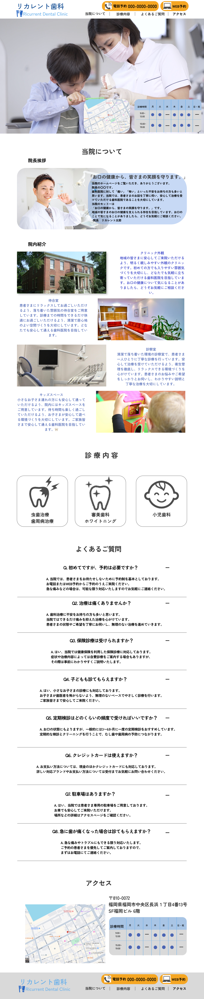
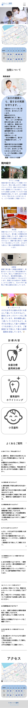

| 概要 | 個人制作の仮想WEBサイト |
|---|---|
| 作品名 | リカレント歯科 |
| ターゲット | 10代〜70代の老若男女 |
| 担当範囲 | 企画/デザイン/コーディング |
| 制作期間・制作完了日 | 企画…6時間/デザイン…16時間/コーディング…24時間・2026年3月22日 |
| 使用ツール | Figma/HTML/CSS/Vanilla JavaScript |
| 工夫・サイト設計 | このサイト制作では「幅広い年代の患者様が迷わず予約できること」を念頭に、デザイン面・コーディング面で以下の3点を特に意識して取り組みました。 1.ユーザー視点を重視した情報設計とUI設計 クリニックの場所・診療時間といった重要情報をファーストビューに配置し、フォントサイズは16px以上で可読性を確保しました。白と青を基調に清潔感・信頼感を演出し、予約ボタンは補色のオレンジで強調することでユーザーの行動を促進しました。2. 直感的に操作できる導線設計 予約ボタンに電話・PCアイコンを用いることで機能を視覚的に伝え、幅広い年代のユーザーが迷わず操作できるよう配慮しました。3. 読み込み速度と保守性を意識したコーディング 読み込み速度を考慮しVanilla JavaScriptで実装し、clamp()を活用してレスポンシブ対応を効率化し、クラス設計はシンプルに保ちつつ共通パーツをコンポーネント化することで保守性を向上させました。 |
| ソースコード | https//wwwwwwwwwwwwwwwwwwwwwwwwwwww |

